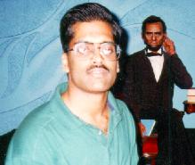

Year-End Thoughts

A very happy new year to all ORNETers on behalf of the Weekend Thoughts team (Debasmita Misra, Sidhartha Mohanty and Surjit Sahoo). We hope the new year will see the realization of your dreams and aspirations.
Kindly contribute articles for publication in the Weekend Thoughts column through 1996. We acknowledge gratefully all the contributors for the past year, and hope they will be equally kind this new year.
Below is a personal compilation of all the articles that appeared as part of the WT column last year. My apologies for any omissions or any misspellings in names that might have crept in.
All the very best again,
Regards,

Amitabh (12/31/95)
(amishra@cs.tamu.edu)
Year-End Thoughts
I must have dozed off on my desk, for I awoke with a start. The pleasant, and ample, countenance of Arvind Pinto, my room-mate, presented itself to me. "Whoa, there!" he began. "I've found you!" I motioned for him to sit down, and tried to organize my thoughts. I had been sleeping in my office; fine. My boss had not found that out; even better. And wait a second, I was dreaming about ... Goodness gracious, I was dreaming about Sima! And today in my dreams, I had even mustered enough courage to go upto her, kneel down like they did in old movies, and ask her if she would marry me. And then, before she could even think of an answer, Pinto came and woke me up!
I turned to him, my eyes blazing with thinly disguised fury. "Why on earth did you have to come in now?" I fumed. "Just a few seconds more, and I would have found an answer to whether Sima ..." I trailed off. "Now I have to start all over again!" I moaned.
Pinto waited for a few seconds before petting me gently on the back. "There, there," he said. "Take it easy, old boy! After all, I did save you from ignominy, didn't I? Undoubtedly, she would have said no. To add icing to the cake, she would have probably slapped you hard, too!"
I thought about it for a while. It definitely made sense. Smart chappie, Pinto. Too plump, but nonetheless, smart. Probably he's right, I thought. I turned to him again, smiling. "Good old covey!" I said, my voice hardly disguising my admiration. "How do you manage all these?" I asked. "You manage all straight A's in class, eat twenty dosa's without batting an eyelid, and now you do this: jumping straight to my rescue, from the hands of the cruel maiden! How on earth can you do all this?"
"Aw, it was nothing!" he waved at me modestly. "Just happened to be at the right place at the right time, probably." I could see he was greatly pleased. His rotund face looked even rotunder, and a red blush had most definitely suffused his countenance. He was trying to avoid my gaze, but he was grinning from ear to ear, underneath. I saw this was the most opportune of moments, and said, "Now, dear chappie, if I were to ask you for something, you wouldn't say no, would you?" "Oh, no, no." he said, hardly looking up. "What is it you want? Just name it, and you would have it!" he finished.
"I mean, old boy, you owe me fifteen bucks," I said, looking down at my toes. "Five for the movie we saw the other day, and ten for the extra-large pizza the you alone ate last Friday. I am out of cash right now, and ..."
Pinto looked at me, and the grin, which once extended from ear to ear, now occupied only three-fourth of his face. He blinked a few times, and felt his pockets. "Matter is," he said, "I am out of cash myself. I had twenty bucks when I started out from home, but on the way, felt a sudden urge to eat. So I had a small lunch at ..."
"Oh, never mind," I said. "Rummy thing is, I have the perfect assignment for you! Help me out with it, and we'll call it even! You owe me nothing, and I owe you nothing!" "What is it?" Pinto leaned towards me, eagerly. "Is it about the dynamic decentralized synchronization primitives for cache coherence that we were talking about?" I took a few moments to figure out what he just said, and then frowned a little. "No, it's not that simple. It's much more involved: write an year-end summary of all the weekend columns in our Oriya network, ornet. What I did yesterday was to take printouts of all those articles. See, have a look yourself. Tell me what you think about each."
Pinto pulled his chair closer to mine, which involved considerable energy because he can not be called "lean" by any stretch of one's imagination. He rolled up his sleeves, uttered "Hei ho!" and there we were, off into our endeavor.
Twenty minutes had passed, and we hadn't exchanged even a single word. Presently, Pinto stirred. "Looks like your Weekend Thoughts had quite a modest beginning this year," he said. "The first couple, for example, were collections of jokes, quotes, and such, I see. Mighty funny, some of these. Look at the Marxist wondering about what freedom is, as pointed out by Debasmita Misra." "Why, look at this!" I said. "See what Surjit Sahoo writes: Some people can tell the time by looking at the sun, but I have never been able to make out the numbers!" "Absolutely hilarious," agreed Pinto. "So Weekend Thoughts began thus, but matured into a full-fledged, discussion-oriented column. Very nice. By the way, why don't you people start a newsgroup of your own, rather than the present concept of a listserver? It would simplify matters considerably!" I pondered over it for a second, and then said, "Well, I guess so. I will talk to the appropriate authorities. We'll look into the problem, and formulate a solution." Pinto gave me an admiring look. "Well spoken, my dear roomie," was all he could manage, after a while. "If you can talk like that, and make such vacuous and inane statements, you'd achieve much success in this world." "Thanks!" I said.
As Pinto sat there and went through some more articles, I went downstairs and fetched two cokes. I came back to find him in a pensive, sombre mood. "What happened?" I asked. "Are you feeling hungry again?" He looked at me, looked through me like I didn't exist, and after a couple of seconds, extended his hand and took a can of coke from me. "No, I am not hungry. I was pensive because I was going through some really thought-provoking and socially conscious articles. Here, see!
"Most of the articles seem to consider the root of the problems that face Orissa, and India, today. Look at this article here: Purna Mohanty wonders why Orissa has remained poor throughout these years. He asks if it has anything to do with the characteristics of Oriyas in general, like, for example, that they are shy and emotional, and are easily satisfied with their lot. And here, Gopal Mohapatra wonders aloud if priests and politicians are ultimately to blame for the mess that was Punjab, or for the Babri Masjid incident. Laxman Mohanty asserts that some of the problems may be removed if we had more entrepreneurs as role models, not more engineers and doctors. Mr Mohanty has even started a children's magazine in Orissa for furthering computer awareness!"
"Most admirable," I agreed. "See this one. Prakash Muduli wonders if there is something fundamentally wrong that can explain the lack of sporting success of India. He goes on to mention that some of us are probably better musicians, writers, or sportspersons than scientists or programmers. In other words, one must have the courage to make an unusual career choice, and have the determination to follow it up with hard toil.
"In this excellently written piece, Debi Prasad Mishra opines that a strong reason why industrial progress has been hampered in India might be the hierarchical responsibility structure in most Indian workplaces. Sidhartha Mohanty stresses on the role of having a vision, a dream, to help Orissa in whatever little ways we can. Unless we dream, what can we do?" "Oh yes," said Pinto. "Was it not Walt Disney who once said that you can achieve greatness if you can dream for two hours every day and then spend four hours doing something about those dreams?"
"Absolutely," nodded I. "Devi P Misra suggests various ways in which OSA can help in changing Orissa's outlook from an agricultural one to an industrial one. Debasmita Misra says that rather than a revolution, a slow, non-violent solution might work instead. A generation of sacrifice might be the answer to India's problems, he feels. Manoj Sahu, in his article, quotes from T N Seshan's views about the failures in the Indian education system. Susanta Mohanty draws from some experiences from his life as a student, and as a professional working in India, and lists some general problems that probably hinder industrial development in Orissa. Anirudha Sahoo wonders if all the people who profess to be concerned about Orissa's problems actually are concerned."
"There are a number of articles that are nostalgic in nature, I see. Speaking of nostalgia, I wonder where those days are gone, when my girlfriend ..." he leveled off. I waited for a few moments, but seeing he was hopelessly lost in his thoughts, I pinched his arm. "Ho!" he exclaimed. "Well, as I was saying," he continued, "see this wonderfully humorous account of Sukant Mishra's, in which he recalls his childhood days, his drawing prowess, and his days of secretly reading novels safely tucked inside textbooks. Bigyani Das muses about her days in Vani Vihar, where she had a few unpleasant, but a lot of fond experiences. Swapnakant Mohanty goes back to his experiences at REC, Rourkela, where he had ample opportunity to study the ragging problem, from both the oppressed and the oppressor's viewpoints. Raikanta Sahu recalls his college days, but lends a unique blend to his article by describing how he consciously tried to develop a truly Indian identity at the cost of seeming aloof to his Oriya friends. Ashok Swain remembers his first few hours in Sweden, which can not be described as *pleasant* by the wildest stretch of imagination. He was actually locked up inside a bathroom for two hours before some kindly souls rescued him!"
"About time, too!" added Pinto. "See here: Abinash Nayak lists some of his adventures in the US. Susil K Panda has some unique stories to tell regarding two childhood friends, and wonders what made them behave like they did. Both were bright students, but both went off the narrow and the straight. He wonders what went wrong. And Asish Mohanty writes about how he rediscovered his Indian roots at a relatively young age. With a touch of humor, and surprising clarity, he talks about maintaining balance between his westernized upbringing and Indian roots. Dipak Rath fondly remembers life at UCE, Burla."
"You know, Pinto, I am from UCE, Burla, too!" "Really?" he smiled blankly at me, and then continued talking. I was really mad at him: What? Not a single question about UCE? Here I was, ready with a hundred stories about my dear old college, and he doesn't even ask! I made a mental note of this so that I can get even with him someday in future, and then continued with our discussion.
"See this," he said. "Shanta Misra writes two marvelous poems regarding Mother. She asks if Mother is more of a friend than a mother, and puts her thoughts across in a poetic fashion."
"Wonderful people, I mean poets," I said, after a while. "I have tried a hundred times, myself. I have thought hard, and I have thought often, but I have never produced a line of poetry worth the paper on which it's written."
"I pity you, poor blighter," Pinto said, at length. "I am not surprised. After all, thinking is not one of your strong departments. But you never know, even *you* might succeed someday. Who knows?" He cast me a disdainful look. I stared back with as resolute a look as I could manage at the time, and we went back to our ruminations.
"Somdutt Behura has written a thoughtful piece on atheism. He feels that there is something inherently unscientific about atheists' attitude. Raikanta Sahu wonders if it isn't agnosticism, rather than atheism, that is of concern here. He notes that all logical minds *question*; they don't accept God as painted in organized religion.
"Sambit Sahu thinks about The Question: Do I go back to India, or Do I stay here? He wonders what it is about the US that proves the unbreakable cord: the education, the profession, or the money. What about you, Pinto?" I asked.
"Oh, I have very concrete plans," Pinto answered. "I have everything laid out. I will first do my MS, work for a few years, make some money, and then head back home." "Couldn't be more specific," I agreed.
"Asish Dash feels that every youth has an obligation towards India, no matter whether he or she has been raised in America. He notes the subtle cultural differences. Sashi Satpathy has penned a delightful article in the defence of old age. He notes all the advantages of old age, and the assurance that it brings."
"Couldn't agree more," I said. "Did not somebody say once that one should be happy with old age, for many are denied that privilege?" "Well, you said that just now," Pinto pointed out wisely. "Did you see this wonderfully refreshing article that Manoj Sahu has borrowed from Danny Dutton, an 8-year old? Danny tries to explain the concept of God. He begins his article thus:
'One of God's main jobs is making people. He makes these to put in place of the ones that die so that there will be enough people to take care of things here on earth.'
"Ranjita Misra has described in a beautifully poetic fashion how painful a process it is to part with friends. She asks if it is not a kind of sweet sorrow. She makes it clear how important friends and friendships are to her."
"I liked Tarun Tripathy's piece of fiction on time travel a lot," said Pinto. "He makes use of his excellent imagination to portray a picture of a probably not-too-distant future. And then, there is Umakanta Choudhury's satirical, tongue-in-cheek look at an imaginary model to evaluate happiness. A model that captures the behavior of the happiness parameter perfectly, what do you say?"
"Can I disagree with you, Pinto?" I said. "And see here, my very own article that describes how to achieve a balance in married life between the spouses. What do you have to say about this article?" I asked, with thoughts of how much modesty I should display when he showers me with accolades regarding my article.
"Well, the idea is absolute baloney," he began. "The language is what I expect from a third-grade kid, and the style of presentation, well, the less said about it, the better. How on earth did they pass it to be posted on ornet?" he concluded.
"Must be a mistake," I said. "Anyway, look at this article by Minoti Sahu that discusses the pluses and minuses of funding your own education here in the US, by working your way through college. She compares the feasibility of such an approach in India and in the US.
"Sujata Pradhan talks about that 'something more' in life that goes beyond what is apparently mundane. Like Emitt Smith of the Dallas Cowboys exploring the line of scrimmage, groping a little, and then bursting through for a ten-yard gain, Sujata's article scratches the surface of her periodic Hindi-movie-mania, and bursts inside to reveal that it is not as mundane as it seems: it is merely a manifestation of that 'something more' in life."
"I agree," opined Pinto. "Sanujit Senapati categorizes people based on their attitude towards marriage. Arun Patnaik explores the concept of happiness beyond the model provided by Umakanta Choudhury. He wonders if there is an appropriate answer at all to the question 'Are you happy?' Is happiness relative, after all? Is happiness quantifiable?"
Pinto got up to leave. "Wonderful stuff, but I must leave," he announced. "I am just a bit hungry, you see. After all, one large pizza, two chicken enchiladas, and one vegetable sandwich can only last so long. And I have been sitting here with you for ... let me see ... gasp! What, three hours?! My God, I absolutely must grab some food before I drop dead from starvation."
As he hastened out of my office, I let out a long sigh.

![[IMAGE]](mult.gif)
![[IMAGE]](jag.gif)
Ride back to Home Page...
![[IMAGE]](rath.gif)